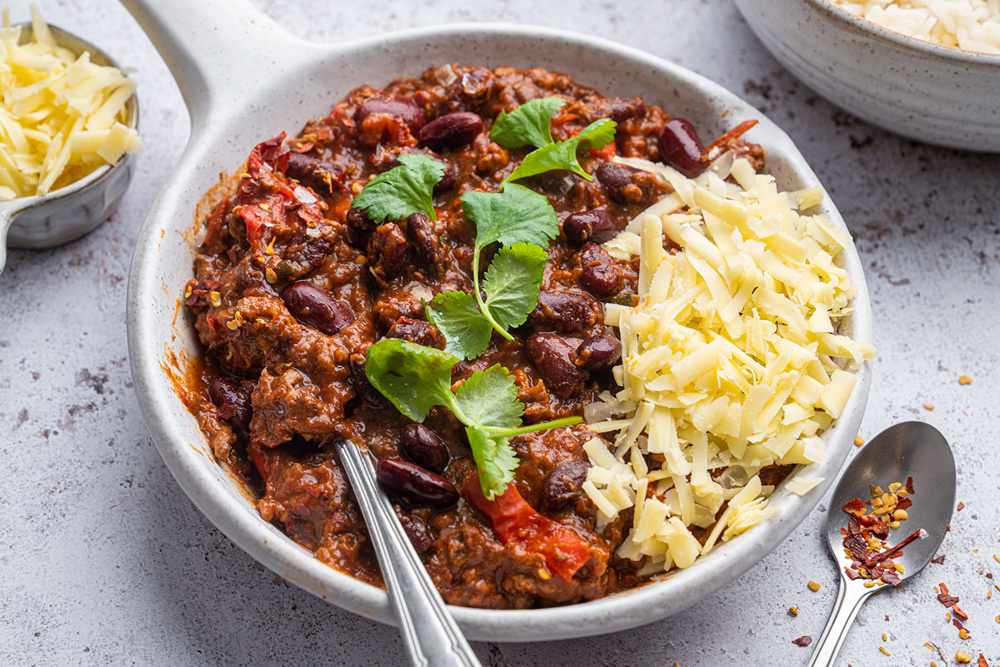

Chili Con Carne
This great chilli recipe has to be one of the best dishes to serve to
friends for a casual get-together. An easy sharing favourite that uses up
storecupboard ingredients.
This is another personal faourite that is a staple in my kitchen and does
not take long to cook at all. A flavourful Mexican classic.
Ingredients
- 1 large onion
- 1 red pepper
- 2 garlic cloves
- 1 tbsp oil
- 1 heaped tsp hot chili powder
- 1 tsp paprika
- 1 tsp ground cumin
- 500g lean minced beef
- 1 beef stock cube
- 400g can chopped tomatoes
- 1/2 tsp dried marjoram
- 1 tsp sugar
- 2 tbsp tomato puree
- 410g can red kidney beans
- plain boiled long grain rice, to serve
- sour cream, to serve